The range
Three line-ups built to the same rules and checked the same way: the mid sits inside the kick mouth, the mouth is square, the top and bottom are flat so nine boxes tile, the phase plugs are sized from slices of the real model, and the mid's top end comes from FEM. Every centre body is a ribbed 6 mm printed shell whose inside is the mid's sealed rear chamber.
| Model | Kick | Mid | HF | Mid to HF | Kick -6 dB (ground) | Sensitivity | Outside W x H x D (mm) | Splay | Body plastic | Drivers |
|---|---|---|---|---|---|---|---|---|---|---|
| Sunflower 15C | 18 Sound 15W700 | Beyma 8MI100 | B&C DE111 | 4.0 kHz | 96 Hz | 105 dB | 675 x 675 x 600 | 18 deg | 6 L | $451 |
| Sunflower 15B | 18 Sound 15W700 | Beyma 8MI100 | DS18 PRO-TW920 | 2.5 kHz | 96 Hz | 104 dB | 675 x 675 x 600 | 18 deg | 6 L | $430 |
| Sunflower 12C | B&C 12CL76 | Beyma 8MI100 | B&C DE111 | 2.5 kHz | 108 Hz | 103 dB | 496 x 496 x 600 | 6 deg | 5 L | $415 |
Drivers are per box at the prices found when the design was made. All three are simulated, not built or measured.
Sunflower 15C
Flagship kick top: 15 inch kick, 8 inch mid, 1 inch compression HF in a constant-directivity waveguide.

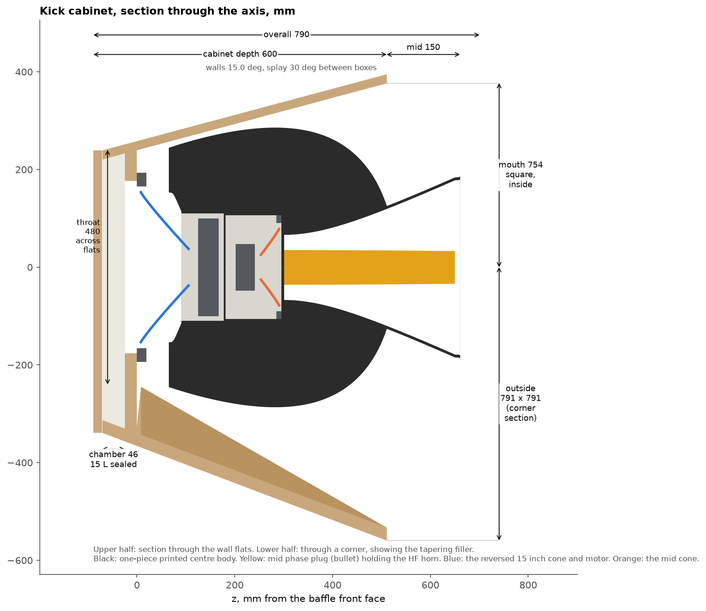


Sunflower 15B
The same box with a bullet tweeter in a large phase plug at the mid throat, firing down the mid horn. Its figures are the maker's own.
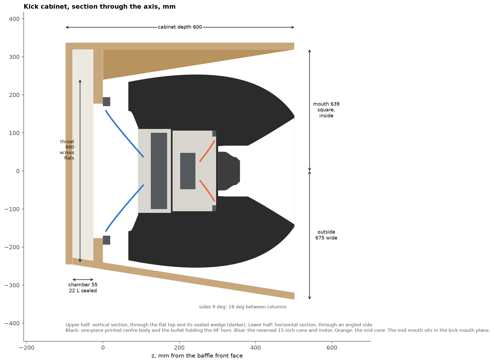
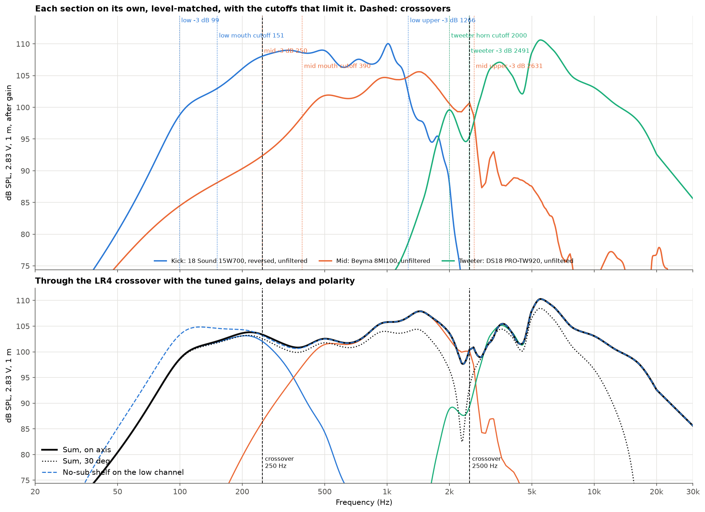
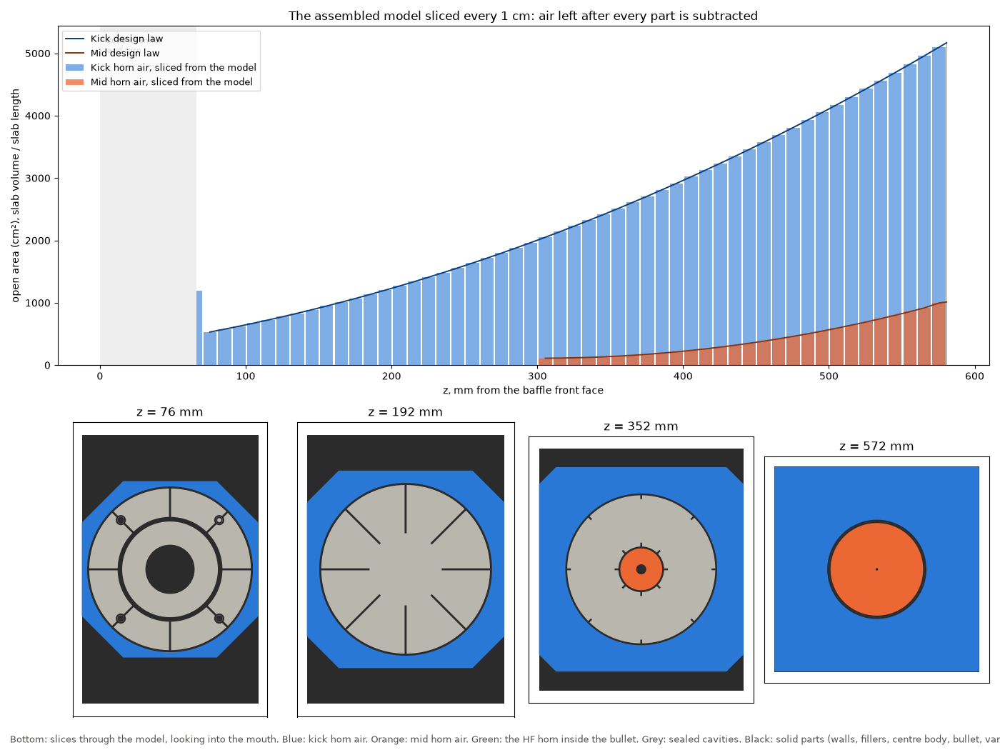
Sunflower 12C
Compact top: 12 inch kick in a box under 500 mm square; always used with a sub.
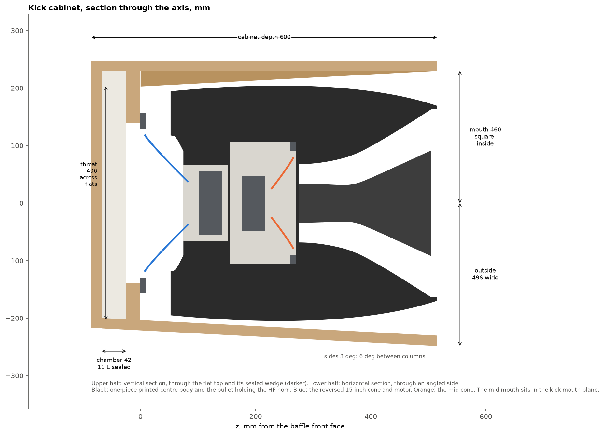
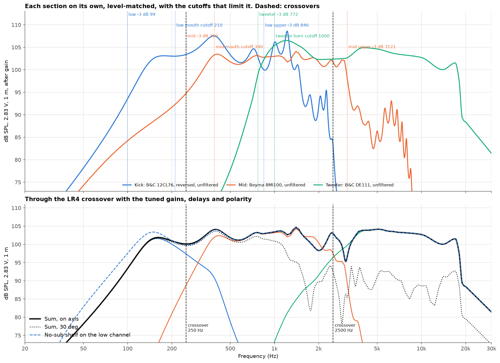
Hex 8: a small two-way for single use (concept)
For a cafe or bar that wants one striking box per side, not an array: a 350 mm hexagonal cabinet, 300 mm deep, with an 8 inch coaxial driver. The compression driver fires through the centre of the woofer and the cone is its horn, so the two share one source and one coverage pattern. It is a hybrid: a short hexagonal horn on the front of the cone, and the 18 litre rear chamber radiating into that horn through three round ports, one in every other wall near the mouth, as in a multiple-entry horn. The ports are printed and bend inside the box to reach their length.
| Hex 8 (simulated low end) | |
|---|---|
| Driver | Faital 8HX150 coaxial, about $282 |
| Low end, on a wall | -6 dB at 54 Hz, with a few dB of bass EQ below about 100 Hz |
| Sensitivity and level | 95 dB at 2.83 V; about 113 dB before the cone reaches its excursion limit |
| HF | Takes over from 1.7 kHz (maker's figure) |
| Size | 350 mm across the flats, 300 mm deep; three 44 mm ports, each about 230 mm long |
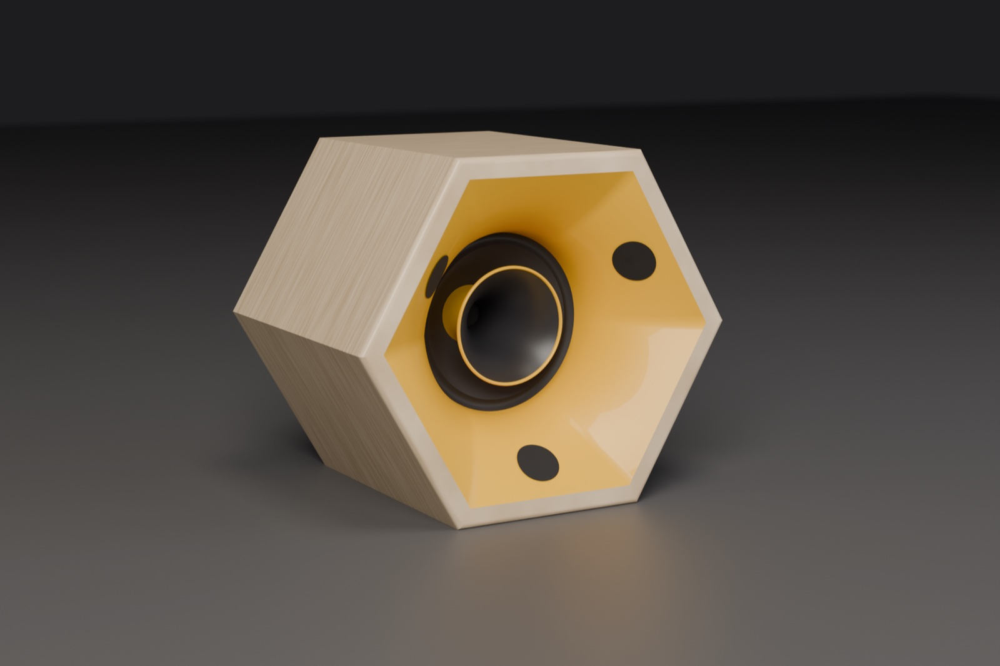
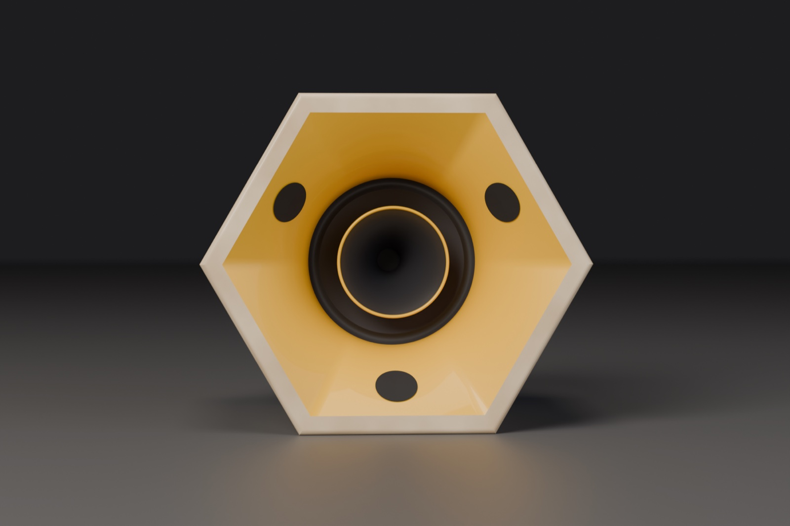
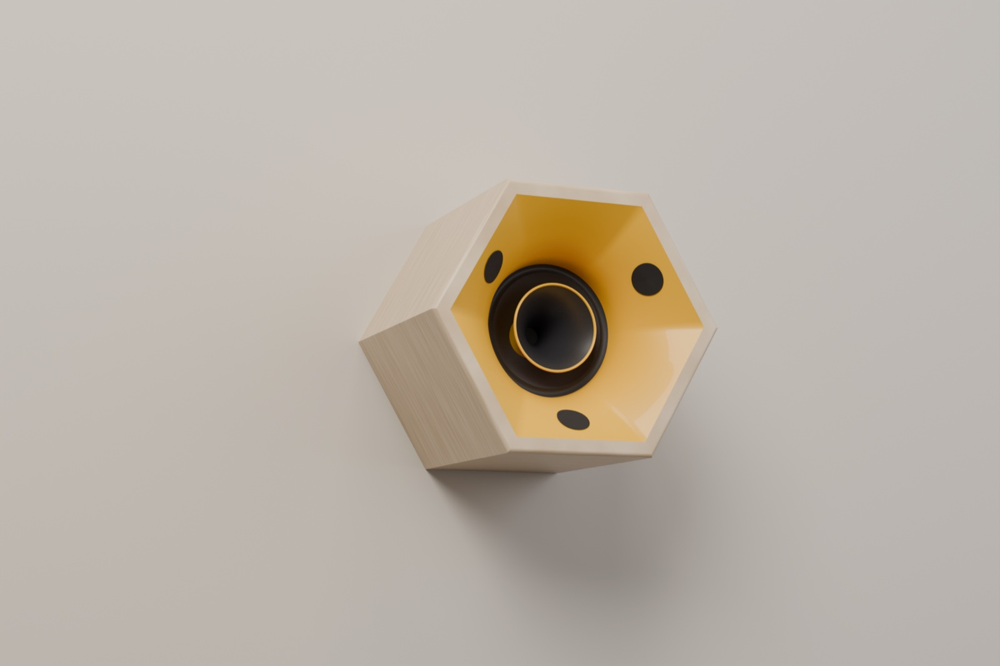
Concept. The low end is simulated (a ported-box model with the driver's datasheet parameters). The front horn, the crossover and the top end are not: those figures are the maker's. An alternative with a Beyma 8MI100 and a bullet tweeter as its phase plug keeps the yellow plug and crosses at about 3.2 kHz on FEM.
Festival clusters (concepts)
For festivals, the boxes fly as a cluster: one centre box ringed by five, every mouth aimed out from one point. Five round a centre on a curved surface means the centre is a pentagon and its neighbours hexagons, the pattern of a football, so the joints between boxes are flush with no gaps. The pentagon is the smaller tile, so the centre box is the smaller driver. Inside each box are the Sunflower internals scaled to fit: the kick centre body, the yellow mid horn and the phase plug that holds the HF waveguide. The flown frame hangs above.
| Cluster | Centre box | Ring | Boxes |
|---|---|---|---|
| Cluster 15/18 | 15 inch box, pentagonal mouth | Five 18 inch boxes, hexagonal mouths | 6 |
| Cluster 12/15 | 12 inch box, pentagonal mouth | Five 15 inch boxes, hexagonal mouths | 6 |
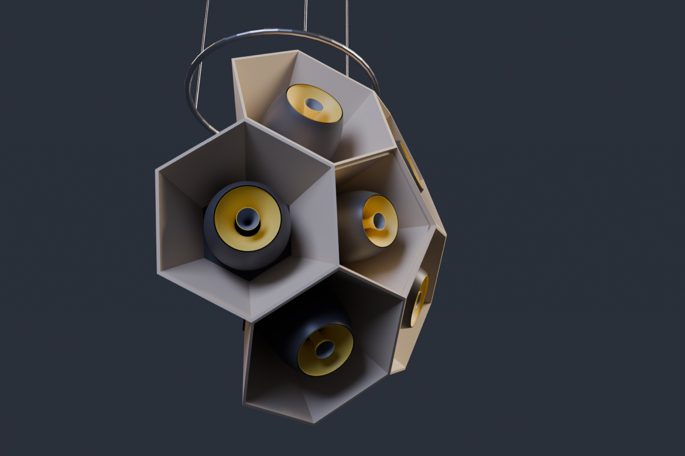
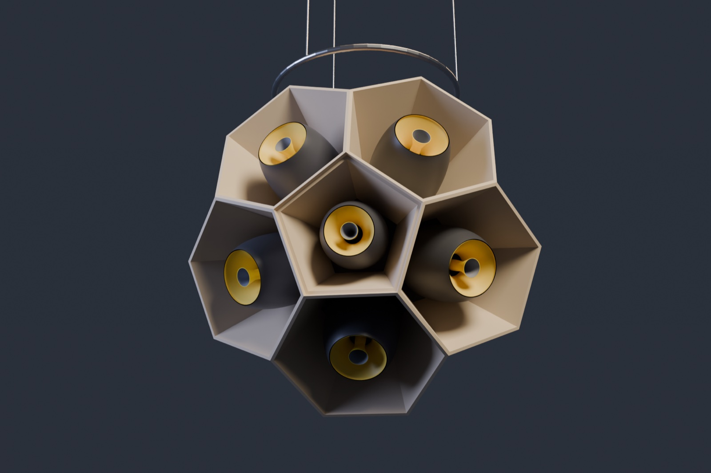
Concept only. These renders show the arrangement. The pentagonal and hexagonal boxes have not been designed or simulated: each needs its own horn, sized from the inside out and checked like the boxes above. Neighbours sit about 37 degrees apart, so a cluster covers a wide area from one flying point.